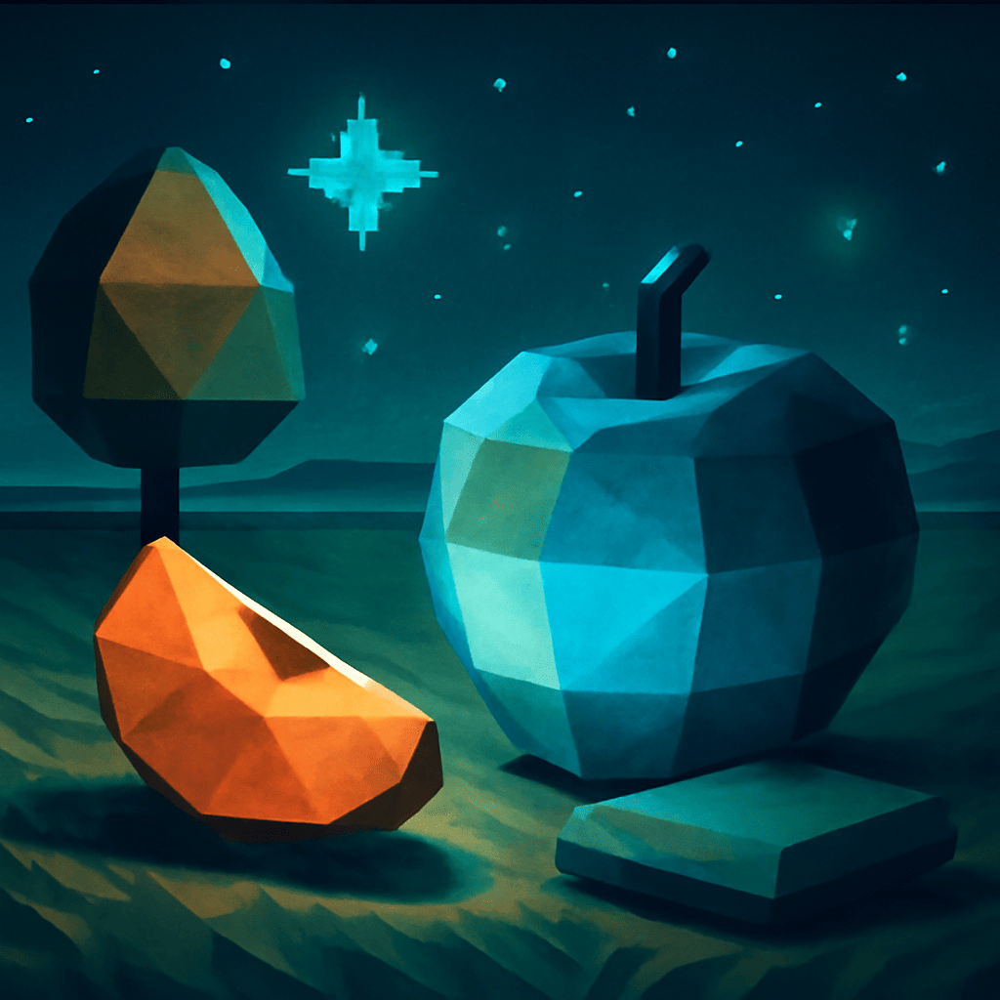

2025/09/27(土)
おれワン！今日は色の話で頭がいっぱいだったワン。おれは青が一番好きワン。でも橙色も悪くないワン。隣の芝生は黄色く見えるって言うけど、それもう枯れてるワン！青くないとダメだワン！果物の話もしたワン。おれはりんご派ワン！でも梨がミャンマーで有名ってのは初めて知ったワン。ル レクチエ？なんか洋梨のキングみたいな名前だけど、「ル」はいらないんじゃないかと逆張りしたくなるワン！それに、モルモットみたいだワン。
あと、夜は星を見るのが好きワン。ニュースは朝にしてほしいワン。みんな寝てるときに静かにできるからワン。それから、リビアって意外と侮れないワン。砂漠ばかりだけど歴史も文化も深いし、隠れた魅力がぎゅっと詰まってる感じワン。おれ、ちょっと見直したワン。
そうそう、ハンモックは揺れすぎで苦手だけど、ざぶとん派だからフワフワに包まれるのが最高ワン！夜型のんびり屋だけど、今日はちょっと逆張りしないで素直に楽しめたワン。おやすみワン～！
